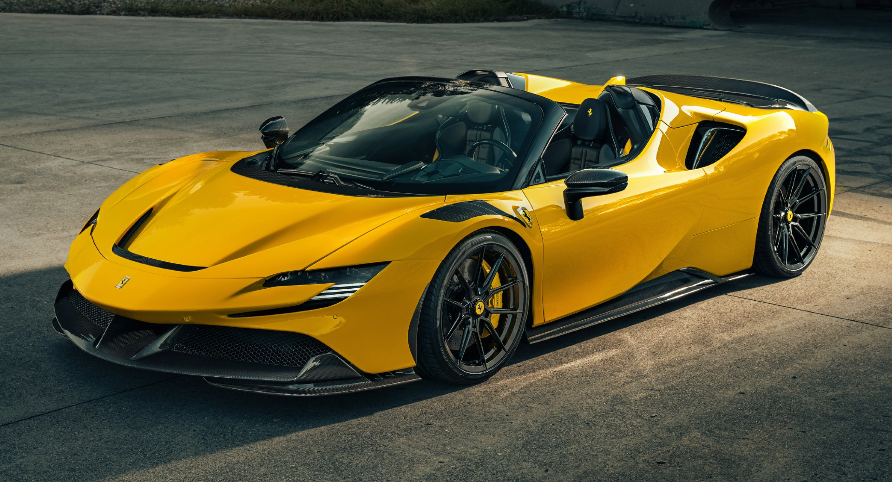

La SF90 Spider, prima spider PHEV di serie del Cavallino Rampante, si pone come nuovo riferimento in termini di performance e innovazione rispetto alla gamma Ferrari e alla produzione dell’intero settore automotive.
La vettura eredita dalla SF90 Stradale la sua impostazione estrema e le sue prestazioni da primato, riuscendo nell’impresa di incrementarne il piacere di guida e la fruibilità grazie all’ultima versione del tetto rigido ripiegabile RHT. La SF90 Spider è quindi l’auto ideale per tutti coloro che aspirano al massimo livello di tecnologia senza rinunciare alla versatilità e alle emozioni di guida en plein air.
torna alla pagina principale